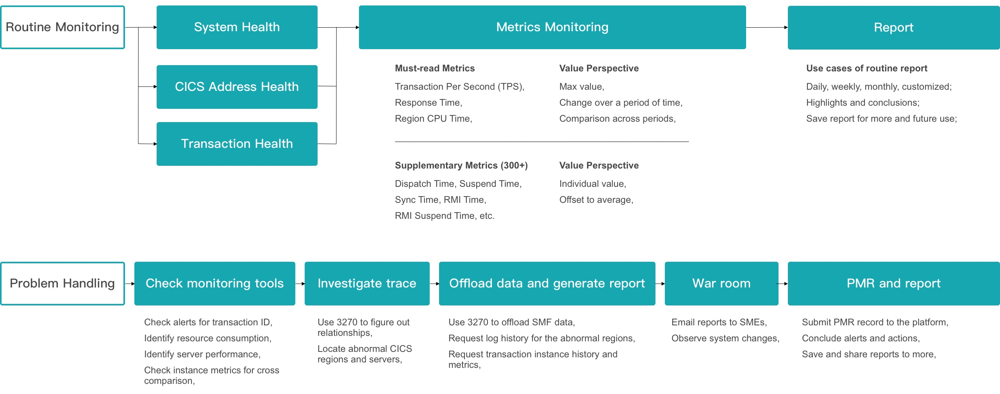
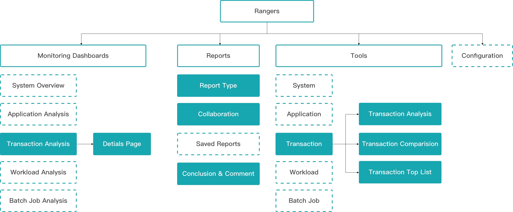
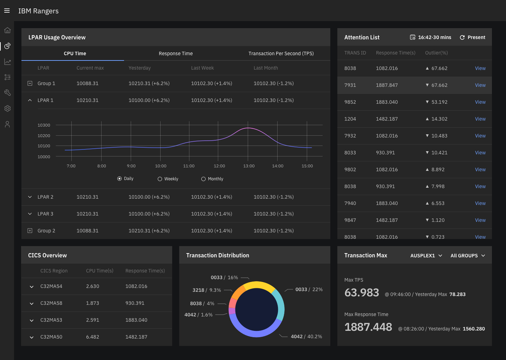
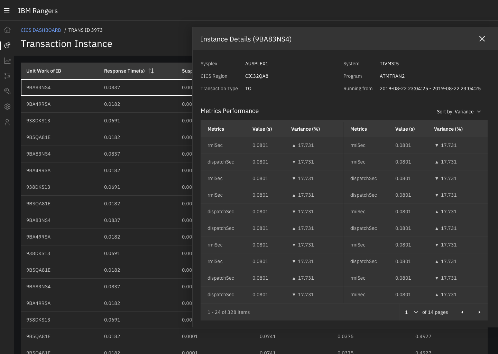
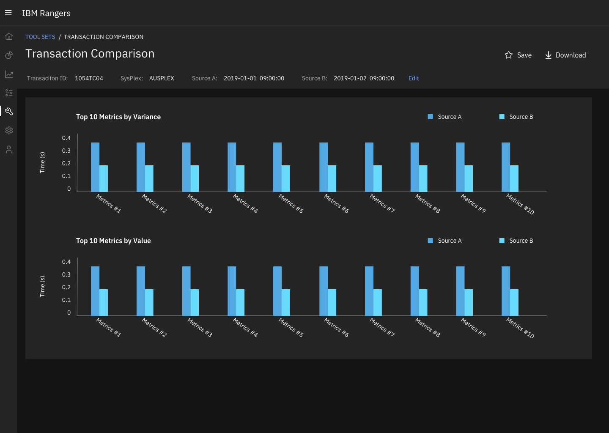
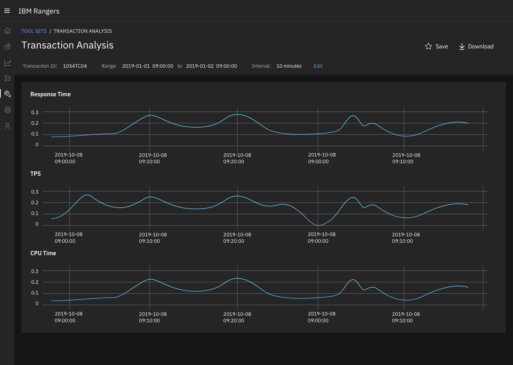
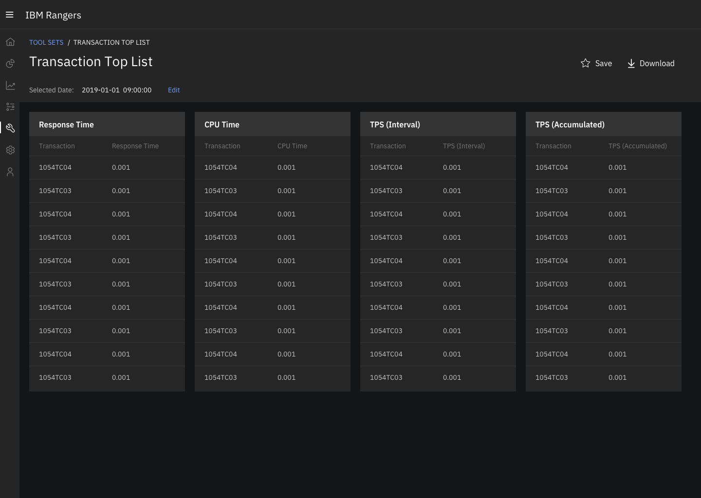
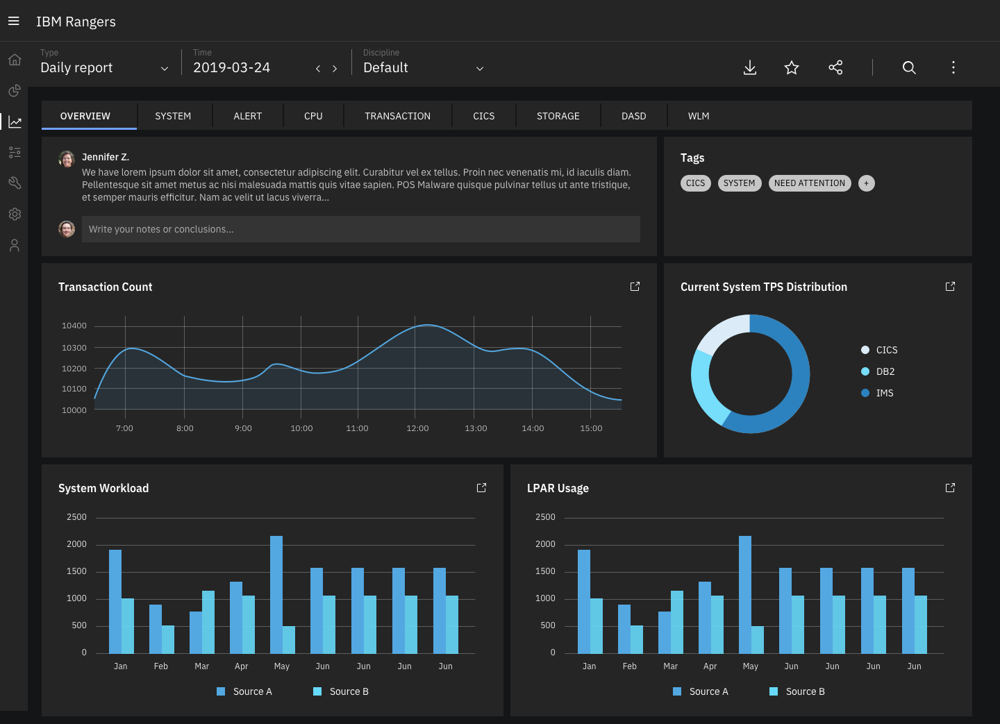
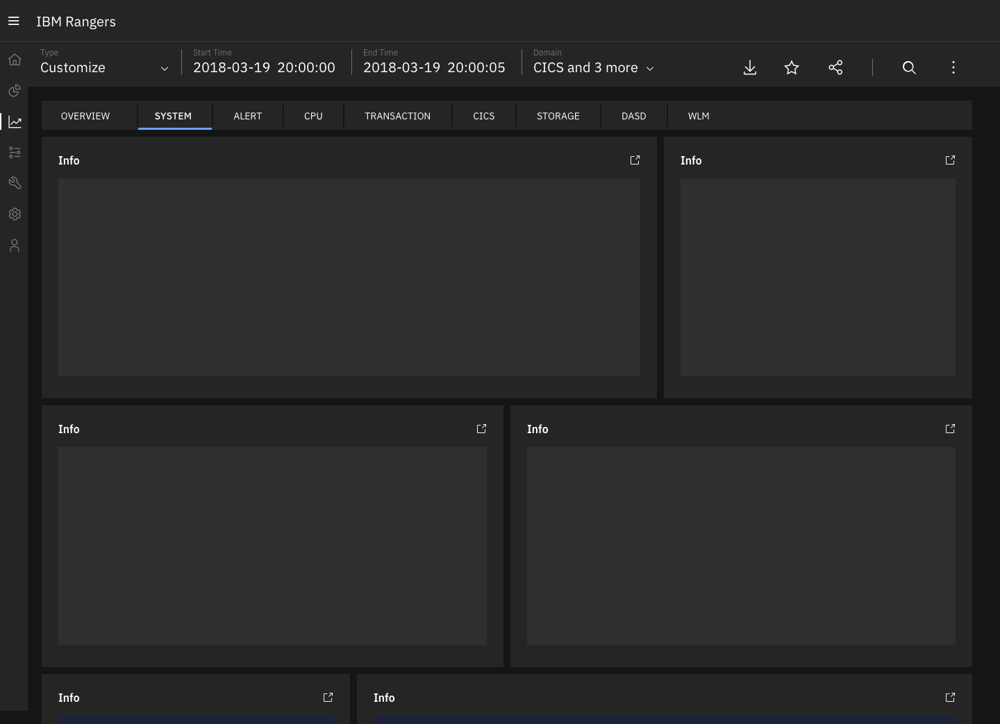

Client requirements are not fully satisfied with current tools and operational experience.
Flexibility (OMEGAMON): OMEGAMON for CICS requires excessive effort spent on human scrutinization which relies heavily on personal experience, not friendly with new users.
Timeliness (CICS Performance Analyzer): CICS Performance Analyzer (PA) generates analytical reports once a day, which for some cases is too late to take corrective actions.
Ease of use: Scattered information collected from different tools in order to do root cause analysis(RCA), which slows down the process and makes it hard for new users to onboard those tools.
Design Goal
Taking advantage of AI and ML, redefine the transaction management experience which allows operators to quickly and easily conduct root cause analysis with minimal learning cost.
Data scientists drove the early stage discussion in regards to AI and data modeling - analyzing anomalies and abnormal behaviors, then I re-defined the RCA experience explorations - from locating precise problems to supporting problem detection and analysis.
1. Explore user pain points and conduct competitive analysis
Interviewed operation team from CEB (光大银行) and JS-RCU(江苏农信), clarified the scenarios - a) Routine Monitoring and b) Problem Handling, identified the information they need and the approach they take to make decisions in each scenario.
Then I looked at various operational tools on the market to understand how their users approach an operational problem, e.g. Splunk, Elastic, BMC View, etc. Besides, I also compared different dashboard designs on Dribbble and Google to figure out the efficient ways to deliver key information.
2. Create core user flow and test with users during PoC
We started thinking about how AI could play a role in solve operational problems. We firstly prioritized the information and use cases in a way which suits most common user requirements and generated the core user flow. Then we created lo-fi mockups while considering page layout, information density and efficiency.
After that, we created a demo based off of the rough ideas and tested it with client's real SMF data during PoC, asking the operators to perform their daily tasks and collected their feedbacks.
3. Finalize interaction and visual details
Coming back from clients, we iterated the design and user flows, enhanced simplicity and efficiency by reorganizing the structure and entry points. We also revamped the whole user experience again to eliminate edge cases. After that, I created hi-fi mockups using IBM Carbon for standardization and future scalability.
4. Deliver to engineers and run design checks
I built the first ever design check patterns with the dev team, looking into the details of the implementation, ensuring the desired status are met.
To-be Journey
To-be experiecne reduces significant amount of time for the operations team by early alerting anomalies to avoid massive impacts and reducing operations costs on RCA.
Key Pages
CICS Overview: Get an overview of CICS transactions to ensure the system is running ok, then check out the anomalies for potential system impact.
Transaction Details: Includes all the transaction instance in a sorted order, where operators could examine horizontally to find common issues. Once found, use the ID to communicate with corresponding SME.
CICS Toolset: A set of optional tools available to operators and SMEs to look at transactions from various perspectives.
  Reporting: Reporting tool allows operators to generate system reports with various granularities and share with managers, SMEs and other stakeholders.
 CDP Rangers has now been purchased by 3 bank clients in China and deployed into production environment, no negative feedbacks recieved so far. And it is now in progress of being a part of IZOA core product.
It is also worth thinking about how to keep design consistency when it scales and integrates with IZOA, and how to "modernize" developer's mindsets of design a product in the future.